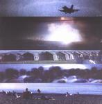

| Artist: | Kryptästhesie |
| Title: | No Age |
| Label: | MizMaze MZ002 |
| Length(s): | 59 minutes |
| Year(s) of release: | 1999 |
| Month of review: | [03/2002] |
| 1) | Il Tao Della Violenza | 8.13 |
| 2) | Tetano | 3.48 |
| 3) | Tutto Passa | 3.07 |
| 4) | Stella - Macchina - Guerra | 3.24 |
| 5) | Prima Poesia Dell'anno | 5.15 |
| 6) | Aleph | 5.42 |
| 7) | Seduzione | 1.36 |
| 8) | Ent(h)omologia | 8.06 |
| 9) | Alh84001 | 7.53 |
| 10) | Dark Lady Incontra Il Suo Fantasma Preferito (non Edipico) | 2.16 |
| 11) | Aquila | 6.54 |
| 12) | Self-heterogenization | 2.38 |
Tutto Passa is acoustic with melodic Italian vocals. Lots of percussion again, but this time calmly. Modern percussion we find on Stella - Macchina - Guerra with weird fluctuations in volume. A strange track which comes over sounding a bit awkward.
Prima Poesie Dell'Anno is typical psychedelic rock from the seventies. A bit too easy-going for my tastes. Aleph is a nice one and owes quite a bit to Robert Wyatt. Slow and grumbling.
After the short rock song Seduzione, we run into the longish noisy psyche track Ent(h)omologia, which is largely led by the rhythm guitar. Again a large role for percussion and the vocals come over a bit uncontrolled.
Alh84001 is more or less like the previous: percussive and a bit too messy. This is also due to the improvised feel the song has. Lots of Wah-wah on Dark Lady etc. The song Aquila might have been named for the band of the same name. Again the vocals are a bit too free, and not very clear. The song itself is a bit monotonous, but also hypnotizing.
The final track Self-Heterogenization opens slowly and rhythmically. It is over before you know it.